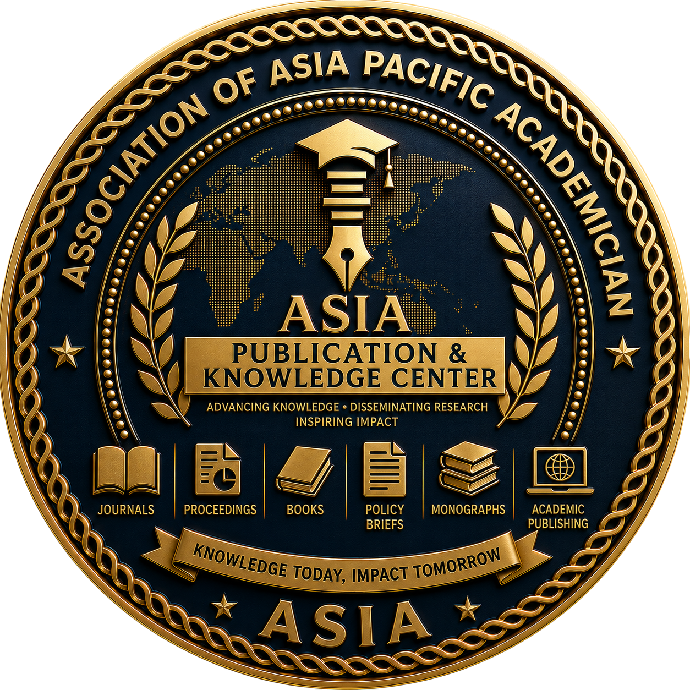

ASIA Publication & Knowledge Center
From Research to Knowledge. From Knowledge to Impact.
The ASIA Publication & Knowledge Center (ASIA-PKC) is the official scholarly publishing, knowledge management, and academic communication center of the Association of Asia Pacific Academician (ASIA). It serves as the strategic hub for developing, managing, preserving, disseminating, and transforming academic knowledge into meaningful contributions for education, research, professional practice, public policy, industry, and society.
ASIA-PKC brings together scholars, researchers, authors, editors, reviewers, publishers, universities, research institutions, libraries, and knowledge communities through an integrated publishing ecosystem that promotes academic excellence, ethical publishing, interdisciplinary collaboration, and global knowledge exchange.
Beyond conventional publishing, ASIA-PKC functions as a comprehensive knowledge ecosystem that supports the complete scholarly communication lifecycle—from research creation and peer review to publication, digital preservation, knowledge dissemination, academic impact, and international visibility.
"To become the leading multidisciplinary publication and knowledge center in the Asia-Pacific region, advancing scholarly excellence, responsible publishing, open knowledge, digital innovation, and global academic impact."
ASIA-PKC is committed to:
Developing internationally recognized publications that uphold the highest standards of academic quality, originality, and scientific integrity.
Collecting, organizing, preserving, and distributing academic knowledge through modern digital knowledge management systems.
Strengthening the competencies of authors, editors, reviewers, journal managers, and academic publishers through professional development programs.
Expanding international access, visibility, discoverability, and influence of scholarly works produced across the Asia-Pacific region.
Promoting responsible research, ethical publishing, transparency, originality, and accountability throughout the scholarly publishing process.
Building collaborative networks among universities, publishers, research institutions, industries, libraries, and international knowledge communities.
Transforming research findings into practical knowledge, evidence-based policy, professional guidance, educational resources, and community development initiatives.
ASIA-PKC serves as the official knowledge management and scholarly publishing platform responsible for:
Managing an integrated scholarly communication ecosystem consisting of:
The ASIA-PKC scholarly communication lifecycle, driving research from creation to measurable societal impact.
ASIA-PKC supports publications across all multidisciplinary academic fields represented by ASIA, including:
Strategic Commitment: ASIA-PKC is committed to creating a trusted and internationally recognized knowledge ecosystem where research is transformed into accessible knowledge, knowledge inspires innovation, and innovation generates meaningful impact for academia, industry, government, and society.